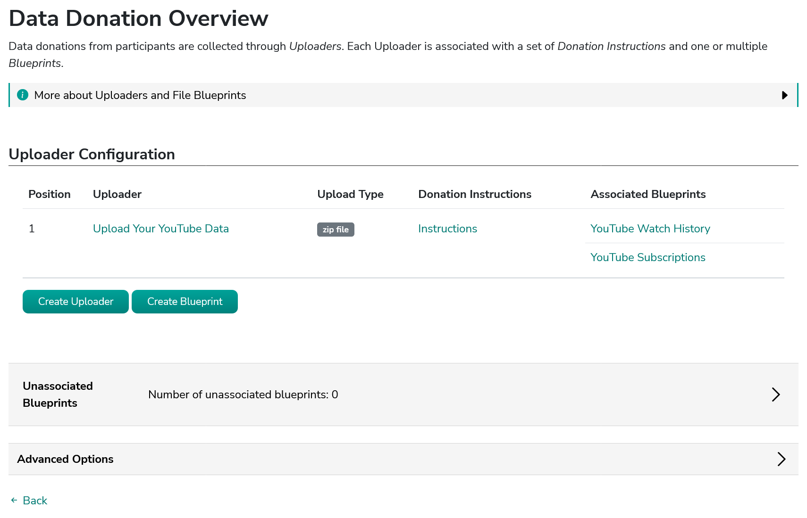
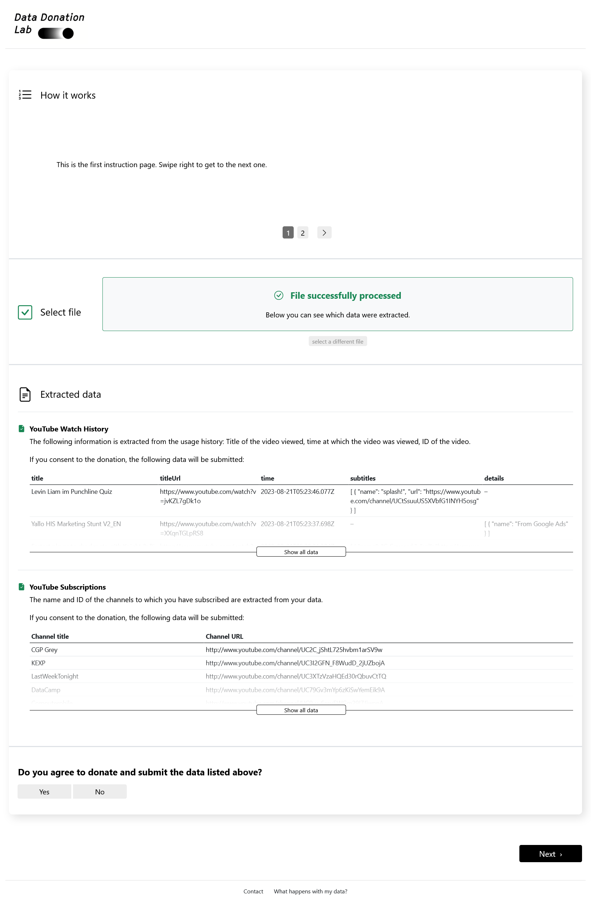

Data Donation Configuration
The data donation can be configured using so-called Uploaders, Instructions, and Blueprints.
An Uploader essentially represents an upload form through which one file can be uploaded (either a ZIP container
or a single file).
For each Uploader, a set of Instructions for participants can be created that show how they can access and
upload the requested file.
A Blueprint is used to define what data will be extracted from the file
that participants upload through the Uploader. Each Uploader has one or multiple associated Blueprints (although
if an Uploader expects a single file, only one Blueprint can be associated with it).
To configure the data donation step, go to the Project Hub and click on Data Donation in the Project Configuration section. You can then configure the Uploaders, Instructions, and Blueprints on the following page:

Configure Uploader
When creating an Uploader, you have the following configuration options:
- Name
-
Internal name of the Uploader. Must be unique per project.
- Upload Type
-
Either "single file" or "zip file" depending on whether your participants are expected to upload a single file (e.g., CSV or JSON File) or a ZIP-container.
- Extract nested zip files
-
Whether to extract zip files found inside the uploaded zip and make their contents available to be handled by donation blueprints.
- Extraction depth
-
Maximum levels of nested zip files to extract (0 = only extract the top-level zip).
|
If You can control how many levels deep this works—for example, a depth of 1 means it will open any zip inside the main zip, but stop there. The paths of the extracted files will reflect the archive structure. For a file inside the main zip, the path is simply the filename (e.g., data.json). For a file inside a nested zip, the path includes the nested zip’s name (e.g., nested.zip/inner.json). |
- Display name
-
Name displayed to participants in the header of the Uploader on the data donation page.
- Display position
-
The position of the Uploader on the data donation page. Uploaders with a lower position will be displayed closer to the top of the page. This setting only has an effect, if you use multiple Uploaders in the same project.
- All-in-one consent enabled
-
By default, participants will be asked to consent to the donation of the data associated with each Blueprint. If all-in-one consent is enabled, participants will instead be asked to consent to submit all uploaded data at once. The all-in-one consent question will be displayed at the bottom of the
 Figure 2. Default Consent
Figure 2. Default Consent
Figure 3. All-in-One Consent - Associated Blueprints
-
The Blueprints associated to this Uploader. Only associated Blueprints will be applied to the files uploaded through a particular Uploader.
Configure Instructions
Once an Uploader is created, you can add Instructions to it. Donation Instructions consist of one or multiple instruction pages. Instruction pages are displayed as a slide show at the top of the Uploader on the donation page (see the figures on the data donation overview page). For each instruction page, the following can be configured:
- Text
-
The instruction text displayed to the participants. Researchers can also upload and include images or gifs to guide participants through the data donation process in this field (currently, video upload is not supported).
The participant’s external ID is available as a template variable to be included in the instruction text as follows:
{{ participant_id }}which will be displayed to the participant as something likeIPI2wHDWrHODDRKuo8zo101S. This is helpful to enable participants to continue the data donation at a later point in time (e.g., because it can take some time between requesting data takeout and being able to download it); read this section of the documentation to find out how this can be done. - Page number
-
The order of the page in the slideshow.
|
If no instructions are defined for an Uploader, the instruction section will be hidden in the participation view. |
Configure Blueprints
When creating a Blueprint, you have the following configuration options:
- Name
-
Name of the Blueprint. Will be publicly visible to participants. Therefore, it is important to define a meaningful name (e.g., "Watch History", "Liked Posts" or similar).
- Description
-
Description of what information the Blueprint will extract from the uploaded file. If defined, the description will be visible for participants in the data donation step.
- Display name
-
Name displayed to participants on the data donation page.
- Display order
-
Sets the display order for this Blueprint in the participation interface. Blueprints are shown in ascending order by this value. If multiple Blueprints have the same order value, they will be ordered by creation date (oldest first).
- Associated Uploader
-
The
Uploaderto which the Blueprint is associated. - File paths
-
Specify the path to the file you want to extract from the uploaded zip (Only necessary, if the Blueprint is associated to an Uploader that expects a ZIP file). For example, if the file is
some_data.jsonat the root of the zip, entersome_data.json.Matching works from the right:
data.jsonwill match bothroot/data.jsonandroot/some-folder/data.json, selecting the first match. Be specific enough to avoid unintended matches.You can also use regex patterns or define multiple paths, which are tried in priority order (lower numbers first; useful if the filename may not always be the same).
If a path matches more than one file, DDM processes and extracts the data of all matched files consecutively. Therefore, we recommend to be as specific as possible when setting the file path.
Examples for regex paths to match files
Regex Description ^MyActivities\.jsonMatches a file named
MyActivities.jsonthat is located at the root of the ZIP file.^SpecificFolder/MyActivities\.jsonMatches a file named
MyActivities.jsonthat is located in a folder namedSpecificFolderin the root of the ZIP file..*/MyActivities\.jsonMatches the first file with the name
MyActivities.jsonthat can be located anywhere in the ZIP file.(^MyActivities\.json|^MeineAktivitäten\.json|^MieAttivita\.json)Matches a file that is located at the root of the ZIP file and either named
MyActivities.json,MeineAktivitäten.json, orMieAttivita.json. Can be helpful to match the same file in different languages.You can find about more about regex here. On this website, you will also find some Tools that can help you test regex patterns.
If you have the extraction of nested zip-files enabled, see the File Uploader settings above for how to define paths to nested zip-files.
- Expected fields
-
The fields that must be contained in the file from which information should be extracted. If a file does not contain all fields defined here, No Information will be extracted.
Put the field names in double quotes (") and separate them with commas ("Field A", "Field B"). You can also use regular expressions (regex) to match expected fields - for this, you must enable theexpected field regex matchingoption (see below). - Expected field regex matching
-
Select if you use a regex expression in the
Expected fieldssetting. - Expected File Format
-
The file format of the file from which information should be extracted. Currently, only JSON and CSV is implemented.
JSON specific settings
- Extraction Root
-
Indicates on which level of the files' data structure information should be extracted. If you want to extract information contained on the first level (e.g.,
{'field to be extracted': value}, you can leave this field empty. If you want to extract data located on a higher level, then you would provide the path to the parent field of the data you want to extract (e.g., if your json file is structured like this{'friends': {'real_friends': [{'name to extract': name, 'date to extract': date}], 'fake friends': [{'name': name, 'date': date }]}}and you want to extract the names and dates of real_friends, you would set the extraction root tofriends.real_friends.
Advanced Settings
- Array join separator
-
If an extracted field contains several separate values (e.g. multiple lines of a message) instead of a single value, they are combined into one text using this separator. Defaults to
\n, i.e., joining them with a line break. E.g., an entry["A", "B"]`becomes `"A\nB".
Extracting Nested Loop Settings
Sometimes each item in your data contains a list of related sub-items that you also want to extract as their own rows, instead of one row per top-level item. For example, a ChatGPT conversation export is roughly structured like this: each conversation has a few top-level fields, plus a list of the individual messages exchanged in it.
|
Example "mapping": {
"some-uuid" : {
"message": {
"author": "assistant",
"content": "some content"
}
}
Without a nested loop configured, DDM only sees the top-level fields
( By setting
This approach also works if In this case, DDM just ignores the key of the entries contained in |
- Nested loop path
-
The field that holds the list of sub-items you want to extract as separate rows (e.g.
mapping). Leave empty if you don’t need this (the default) — in that case, the settings below have no effect. To reach a field nested inside another field, separate the names with a dot, e.g.data.mapping. To then extract, e.g. in the example above, the message contents and authors, you will definemessage.authorandmessage.contentas relevant nested fields (see the section on `Relevant Fields`below). - Nested expected fields
-
The fields that a sub-item must contain in order to be extracted. Works just like the top-level
Expected fieldssetting, except it’s checked per sub-item rather than per top-level item: a sub-item missing any of these fields is skipped, but the rest of its conversation (or other top-level item) is still processed normally.
Put the field names in double quotes and separate them with commas ("Field A", "Field B"). Only used ifNested loop pathis set. - Nested expected fields use regex matching
-
Select if you use a regex expression in
Nested expected fields, the same wayExpected field regex matchingapplies to the top-levelExpected fields. - Group entries by parent item
-
By default, all extracted sub-items (e.g. every message from every conversation) are shown to participants combined in one long list. Enable this to instead group and display them by their parent item — e.g. all of one conversation’s messages shown together as a single entry, with the conversation’s own fields (like
title) shown once above them. RequiresNested loop pathto be set. - Allow item exclusion
-
If enabled, participants can remove individual items (e.g. a single conversation) from their donation before submitting, instead of only being able to consent or decline for the whole Blueprint at once. Requires
Group entries by parent itemto be enabled.
|
All settings in this section only apply to JSON blueprints with a
|
CSV specific settings
- CSV Delimiter
-
This field allows you to specify the character that separates values in the expected CSV file. (e.g.,
,,;or\t). If left empty, DDM will try to infer the delimiter from the file structure.
TXT specific settings
- Record separator
-
The character sequence that marks the boundary between individual records/entries in the file (e.g., a blank line or a single line break). Use
\nfor a line break or\n\nfor a blank line. - Field separator
-
The character sequence that separates individual fields within a single record (e.g., a line break if each field is on its own line). Use
\nfor a line break. - Key-value separator
-
The character that separates a field’s name from its value within a line (e.g.,
:inName: John, or=inname=John). - Skip header lines
-
The number of lines to skip at the beginning of the TXT file before processing begins (e.g., to ignore a title or metadata block).
- Skip footer lines
-
The number of lines to skip at the end of the TXT file (e.g., to ignore a trailing summary or signature block).
- Ignore blank lines
-
If enabled, empty lines within a record are ignored rather than treated as part of the field data.
- Trim whitespace
-
If enabled, leading and trailing whitespace is removed from each record and from each key-value pair before extraction.
|
Example Given a TXT file structured like this: with |
|
When entering |
Relevant Fields
The settings above are used to identify and validate the file from which data should be extracted. Once file validation succeeds, the blueprint starts extracting information from the file.
To do this, you need to define which fields to keep in the extracted data. Optionally, you can also rename fields during extraction — this is especially useful when using regex matching, where you want a clean, predictable field name in the exported data rather than the raw matched name.
To define a field, provide:
- Expected name
-
The field/variable name expected to be contained in the uploaded file. This can be an exact name, or a regex pattern (e.g., to match across different translations of the same field).
- Match regex
-
Enable this if
expected nameis a regex pattern rather than an exact field name. - Rename to
-
Optionally, provide the name the matched field should be renamed to in the extracted data. If left empty, the name from
expected nameis used as-is. - Keep in donation
-
Enable this if the field should be included in the donation (i.e., submitted to you as part of the participant’s donation).
Extraction Rules
Data extraction is performed using Extraction Rules, which are applied to
the file one after another, in the order you define.
- Execution Order
-
The order in which the extraction rules are applied to the file.
- Name
-
The name of the extraction rule. For internal organization only — this is not the field name itself.
- Field
-
The field the rule applies to. This must match either the
expected nameset in the Extraction Fields section, or, if provided, itsrename tovalue. - Extraction Operator
-
Defines the main logic of the extraction step. Below, you see the list of available extraction operators:
Extraction Operator Description Note Keep Field
Keep this field in the uploaded data.
–
Equal (==)
Delete row/entry if the value contained in the given
fieldequals thecomparison value.Works for strings, integers, and dates1.
Not Equal (!=)
Delete row/entry if the value contained in the given
fielddoes not equal thecomparison value.Works for strings, integers, and dates1.
Greater than (>)
Delete row/entry if the value contained in the given
fieldis greater than thecomparison value.Works for integers and dates1. String values are skipped and the row will be kept in the data.
Smaller than (<)
Delete row/entry if the value contained in the given
fieldis smaller than thecomparison value.Works for integers and dates1. String values are skipped and the row will be kept in the data.
Greater than or equal (>=)
Delete row/entry if the value contained in the given
fieldis greater than or equal to thecomparison value.Works for integers and dates1. String values are skipped and the row will be kept in the data.
Smaller than or equal (⇐)
Delete row/entry if the value contained in the given
fieldis smaller than or equal to thecomparison value.Works for integers and dates1. String values are skipped and the row will be kept in the data.
Delete match (regex)
Delete parts of the value contained in the given
fieldthat match the givenregular expression (regex)(e.g., if theregular expression (regex)= "^Watched " and a field contains the value "Watched video XY" the following value will be kept in the uploaded data: "video XY").All field values are converted to strings before this operation is applied.
Replace match (regex)
Replace parts of the value contained in the given
fieldthat match the givenregular expression (regex)(e.g., if theregular expression (regex)= "@([\w-]\.)+[\w-]{2,4}" and thereplacement value= "anonymized" and a field contains the value "some text email@address.com" the following value will be kept in the uploaded data: "some text anonymized").All field values are converted to strings before this operation is applied.
Delete row when match (regex)
Delete row/entry if the value contained in the given
fieldmatches the givenregular expression (regex)(e.g., ifregular expression (regex)= "^Watched " and a field contains the value "Watched video XY" the row/entry will be deleted from the uploaded data).All field values are converted to strings before this operation is applied.
1 Dates are inferred from string values if they are formatted according to ISO, RFC2822, or HTTP standards, and only if both the field value and the comparison value follow the same format. Otherwise, the entry will be treated as a regular string.
- Comparison Value
-
The value against which the data contained in the indicated field will be compared according to the selected Extraction Operator.
- Replacement Value
-
Only required for operation "Replace match (regex)". The value that will be used as a replacement if the regex pattern matches.
Backup blueprints (advanced settings)
A backup blueprint acts as a fallback: if a blueprint’s parser fails to extract data from a participant’s file (e.g., because the file cannot be identified, or the data extraction produces an error) DDM will try its backup blueprints instead. This is useful for handling files whose structure occasionally varies (e.g. a platform export format that changes over time), without having to guess a single configuration that covers every case.
- Backup for
-
Selects the primary blueprint that this blueprint should act as a backup for. Leave empty if this blueprint is not a backup. Only blueprints using the same File Uploader (and belonging to the same project) are available for selection; a blueprint that is itself a backup cannot be selected here — backups cannot be chained.
- Backup priority
-
If a primary blueprint has more than one backup, this number determines the order in which they are tried. Lower values are tried first.
|
A backup blueprint is only used if the primary blueprint’s parser fails to extract data. If the primary blueprint succeeds, its backups are never attempted, even if they are configured. |
Example
Suppose Watch History is a primary blueprint expecting a JSON export, and
the platform occasionally changes its export format in a way that breaks
extraction. A second blueprint, Watch History (legacy format), can be
configured with Backup for set to Watch History and used as a fallback:
if the primary JSON structure fails to parse, DDM automatically tries the
legacy-format blueprint instead (e.g., TXT), and participants see the result of
whichever blueprint succeeded.
If multiple backups are configured for the same primary blueprint, set
Backup priority on each to control the order they are attempted in (e.g.
0 for the first fallback, 1 for the second).